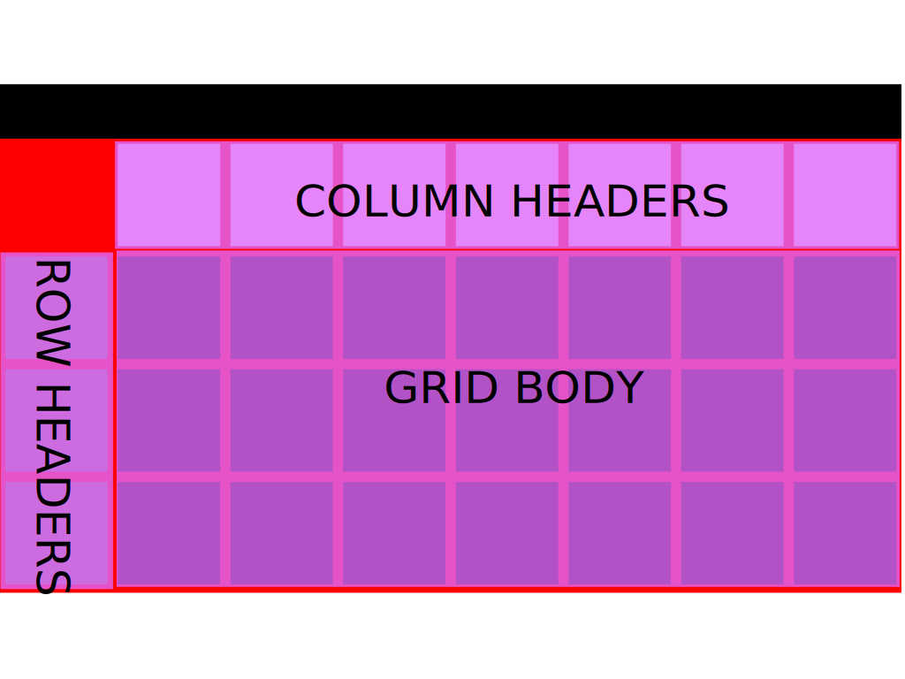

class: center, middle # Developing React with Docker [Fitter](https://www.youtube.com/watch?v=HimvFbossU8). [Happier](https://www.youtube.com/watch?v=My10FLH5DT0). [More productive](https://www.youtube.com/watch?v=9ORllD7fA6I). <br><br> <img src="images/react.png" alt="react logo" style="width:40px"> <img src="images/docker.png" alt="docker logo" style="width:40px;padding-bottom:7px;"> <br><br><br> <small>Presented by *Michael Herman* and *Caleb Pollman*</small> --- ## Agenda -- -- ##### (1) Part 1 - Inherited Jank - About Caleb - Objectives - Problems - Solutions -- ##### (2) Part 2 - docker workflow - About Michael - Objectives - Why Docker? - Development Workflow - Staging Workflow -- ##### (3) Next Steps --- ### About Caleb: #### Front End Developer #### Visual Artist --- ## Inherited Jank: Parent Component is "Grid Container".  --- ### Problems: 1. Scrolling needed to be synchronized between sibling components using scrollTop and scrollLeft element properties. 1. Each time a scroll event was initiated on a child component, the parent component renders all child components. 1. With 30 rows and 30 columns as an example, 960 virtual dom nodes must be rendered. As scrolling happens MANY times per second, this becomes extremely expensive. 1. JANK! --- ### Attempted Solutions: #### Using lodash.throttle in parent component constructor: ```js import _ from lodash; class GridContainer extende Component {constructor(props) { super(props); this.verticalScroll = _.throttle(this.verticalScroll.bind(this), 10); this.horizontalScroll = _.throttle(this.horizontalScroll.bind(this), 10); } } ``` --- ### Attempted Solutions (continued): #### Result: <video src="./videos/lodash_throttle.mov" autoplay loop style="width:100%;"> --- ### Attempted Solutions (continued): #### Using react-throttle package in child component elements: ```js import {Throttle} from 'react-throttle'; class GridBody extends Component { ... render() { <Throttle time="10" handler="onScroll" > <div className="row-headers-container" ref={(c) => { this.position = c; }} onScroll={this.handleScroll} > <div className="row-headers-subcontainer"> {HeaderList} </div> </div> </Throttle> } } ``` --- ### Attempted Solutions (continued): #### Result: <video src="./videos/react_throttle2.mov" autoplay loop style="width:100%;"> --- ### Attempted Solutions (continued): #### Using setTimeout in parent component constructor: ```js class GridContainer extends Component { ... verticalScroll(scrollTop) { setTimeout(this.setState({scrollTop}), 100); } } ``` --- ### Attempted Solutions (continued): #### Result: <video src="./videos/settimeout.mov" autoplay loop style="width:100%;"> --- ### Working solution: #### Using a stuttered shallow check in parent component functions: ```js class GridContainer extends Component { ... verticalScroll(scrollTop) { let diff = scrollTop - this.state.scrollTop; if (diff > 3 || diff < -3) { this.setState({scrollTop}); } } } ``` -- #### Three is the magic number. --- ### Watch those keys! #### Initially keys were created in the child components using Universal Unique ID's: ```js import uuid from 'uuid'; class ColumnHeadersContainer extends Component { ... render() { let {columns} = this.props; const HeaderList = columns.map((column) => { return ( <GridItem key={uuid.v4()} type={column} /> ); }); } } ``` --- ## And we're done! (This is the cat I live with.) --- ## Find me at: #### Github: ### https://github.com/calebpollman/ #### or email: ### cpollman1@gmail.com #### This repo: ### https://github.com/calebpollman/react-synchronized-scrolling --- ## About Michael ``` $ whoami michael.herman ``` -- #### Day Job: [Galvanize](http://www.galvanize.com/) (since May 2015)... 1. ~~Lead Instructor Full Stack~~ 1. ~~Curriculum Developer~~ 1. Senior Software Engineer -- #### Also: 1. Co-founder/author of [Real Python](https://realpython.com) 1. 😍 - [tech writing](http://mherman.org), [open source](http://github.com/mjhea0), [financial models](http://www.starterfinancialmodel.com/), [radiohead](http://radiohead.com/), [chilling](images/me.jpg) --- ## Objectives By the end of this talk you should be able to: 1. Work with React running inside a Docker Container 1. Simply your development workflow with Docker Compose 1. Pass environment variables to a Docker image at build time 1. Utilize volumes to mount your code into a container 1. Do something 1. Add something --- ## Why Docker? *Often, when developing applications with a microservice architecture, you cannot fully test out all services until you deploy to a staging server. This takes much too long to get feedback. Docker helps to speed up this process by making it easier to link together small, independent services locally.* In this talk, we'll look at a development workflow to manage a React app running in a Docker container within a larger set of services. Want to see some bigger examples? 1. [Developing Microservices - Node, React, and Docker](http://mherman.org/blog/2017/05/11/developing-microservices-node-react-docker) 1. [Microservices with Docker, Flask, and React](http://testdriven.io/) --- ### Development Workflow (part 1) Add a *Dockerfile* to the project root: ```yaml FROM node:latest # set working directory RUN mkdir /usr/src/app WORKDIR /usr/src/app # add `/usr/src/app/node_modules/.bin` to $PATH ENV PATH /usr/src/app/node_modules/.bin:$PATH # install and cache app dependencies ADD package.json /usr/src/app/package.json RUN npm install RUN npm install react-scripts@0.9.5 -g # add app ADD . /usr/src/app # start app CMD ["npm", "start"] ``` -- Be sure to take advantage of Docker's layered cache system, to speed up build times, by adding the *package.json* and installing the dependencies **before** adding the app's source files. For more on this, check out [Building Efficient Dockerfiles - Node.js](http://bitjudo.com/blog/2014/03/13/building-efficient-dockerfiles-node-dot-js/). --- ### Development Workflow (part 1, continued...) Build the image, and then spin up the container in [detached](https://docs.docker.com/engine/reference/run/#detached--d) mode: ```sh $ docker build -t "react-denver" $ docker run -d -p 3333:3000 react-denver ``` -- Once spun up, the app will be available on port `3333` on the host machine and on port `3000` for other Docker services. -- Test - [http://localhost:3333](http://localhost:3333) -- Other commands: 1. `docker ps` - view currenly running docker process 1. `docker images` view built images 1. `docker help` - sweet goodness! --- ### Development Workflow (part 2) Simplify your workflow with [Docker Compose](https://docs.docker.com/compose/). Add a *docker-compose.yml* file to the project root: ```yaml version: "2.1" services: react-service: container_name: react-service build: ./ ports: - '3337:3000' # expose ports - HOST:CONTAINER environment: - NODE_ENV=development ``` -- Running a number of microservices locally each within a different project repo? Docker Compose helps to link them together, making it feel almost as easy as running a monolith with a single run command: ```sh $ docker-compose up -d --build ``` -- Test - [http://localhost:3337](http://localhost:3337) --- ### Development Workflow (part 3) Add a [volume](https://docs.docker.com/engine/tutorials/dockervolumes/) instruction to the Compose file: ```yaml volumes: - './:/usr/src/app' - '/usr/src/app/node_modules' ``` -- Volumes are used to mount a directory inside a container so that you can make modifications to the code *without* having to rebuild the image. This should be a default in your local development environment so you quickly get feedback on code changes. -- To prevent the volume - `/usr/src/app` - from overriding the *node_modules*, we used a data volume - `/usr/src/app/node_modules`. This may or may not be necessary, depending on the order in which you set up your image and containers. Check out [Getting npm packages to be installed with docker-compose](http://dchua.com/2016/02/07/getting-npm-packages-to-be-installed-with-docker-compose/) for more. -- Update the container: ```sh $ docker-compose up -d ``` -- Test auto reload! Make a change to the code and watch it update in the browser... --- ### Staging Workflow (part 1) Create build --- ### Staging Workflow (part 2) Add environment varibles --- ## Next Steps That's it! What's next? 1. Add some stuff! Questions?